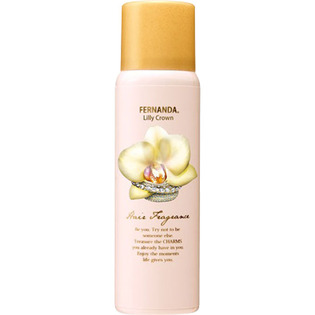

返回列表
产品名称：フェルナンダ ヘアフレグランス リリークラウン

ＦＥＲＮＡＮＤＡ ＪＡＰＡＮ フェルナンダ ヘアフレグランス リリークラウン ８０Ｇ
メーカー ＦＥＲＮＡＮＤＡ ＪＡＰＡＮ
JANコード 4571395821038
商品の特徴
さらさらで香る美しい髪へと導くヘアフレグランス。
- 成分・分量
- 水、ペンチレングリコール、PEG-40水添ヒマシ油、香料、窒素、メトキシケイヒ酸エチルヘキシル、BG、イソステアロイル加水分解コラーゲンAMPD、t-ブチルメトキシジベンゾイルメタン、ラウラミノプロピオン酸Na、ヒドロキシプロピルトリモニウム加水分解ケラチン（羊毛）、ポリシリコーン-14、クエン酸、フェノキシエタノール、エタノール
- 用法及び用量
- 缶を立てた状態で、振らずにご使用ください。髪から10-15cmはなしてスプレーし、手ぐしやブラシでなじませます。